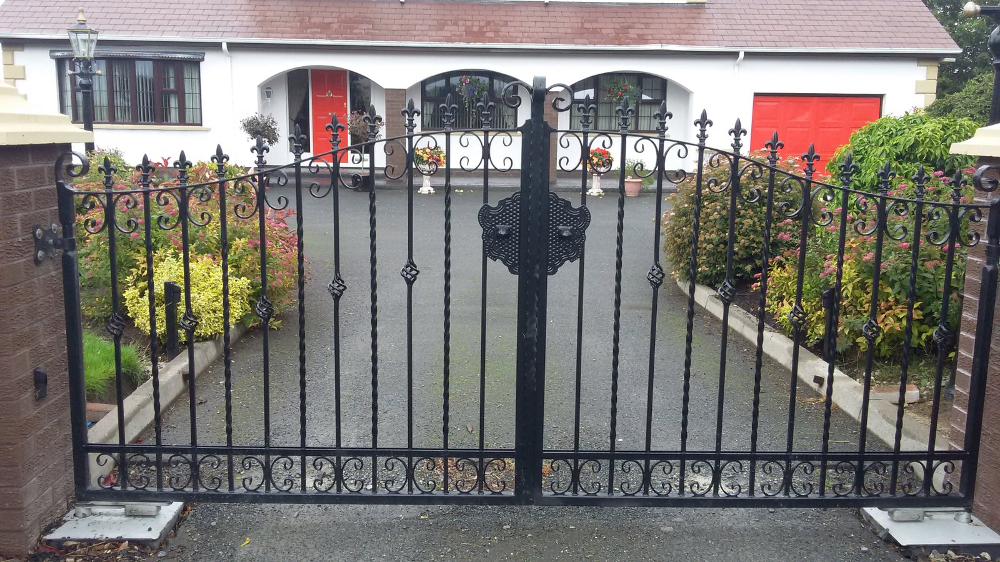

RATHFRILAND · COUNTY DOWN
Steelwork with
a sense of place.
Gates, railings and bespoke steelwork. Designed, made and installed for homes, farms and commercial spaces.

WHAT WE DO
From an entrance.
To a complete structure.
Staircases
Staircases for domestic and commercial requirements.
Balconies
Balconies for domestic and commercial requirements.
Gates
Gates for domestic and commercial requirements.
Steel Furniture
Steel Furniture for domestic and commercial requirements.
Railings
Railings for domestic and commercial requirements.
Fire Escapes
Fire Escapes for domestic and commercial requirements.
Design · Manufacture · Installation
Practical strength.
Individual character.
Travers Steel is a family-run business based in Rathfriland, County Down. The business brings over 25 years of experience in designing, manufacturing and installing steelwork for domestic and commercial clients.
About the business ↗A CLOSER LOOK
Made to belong.
GOOD TO KNOW
A clearer
starting point.
How do I begin?
Call 028 4063 2028 or prepare an enquiry on the contact page. Outline your location, requirements and intended timing.
How do I get a quotation?
Please contact the business directly for a quotation. Current pricing, availability and scope need to be confirmed by the team.